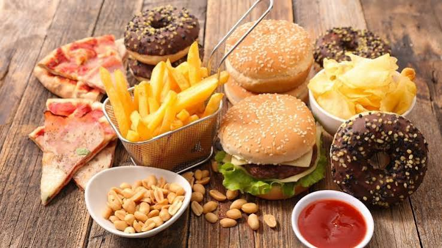
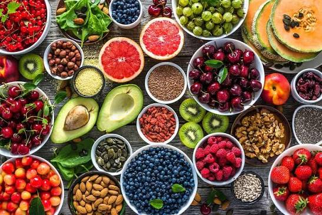

What happens to food when we process it?
From a fresh tomato to a packaged snack, processing can change texture, shelf life, nutrients and convenience. Explore the journey — and decide what belongs on your plate.

Start here
Change happens
Processing isn't a switch. It's a journey.
Click each stage. The image, description and processing meter will change with it.

Unprocessed or minimally processed
What can change along the way?
Processing can have benefits and trade-offs. The method matters as much as the word "processed".
Nutrients
Heat, refining and water loss can affect some vitamins, minerals and fiber.
Safety
Cooking, pasteurization and canning can destroy harmful microorganisms.
Shelf life
Freezing, drying and preservation can slow spoilage and reduce waste.
Taste & texture
Grinding, mixing and formulation can make foods softer, sweeter or more intense.
Often reduced ↓
- Fiber — refining and juicing can remove structural material.
- Some heat-sensitive vitamins — certain nutrients are vulnerable to heat.
- Water — drying can concentrate calories and sugars per bite.
- Food structure — grinding can change how quickly food is eaten and digested.
Often added ↑
- Sugars — can increase sweetness and energy density.
- Sodium — can improve flavor and preservation.
- Emulsifiers & stabilizers — help maintain texture.
- Flavor & color agents — can improve consistency and appearance.
Think you can spot ultra-processing?
Three questions. No pressure. Let's see what you remember.
Numbers worth remembering.
These figures are included as context, not as proof that every processed food has the same effect.
Become a label detective.
You don't need to memorize every ingredient. Look for patterns.
Nutrition Facts
Look at the whole list
Ingredient count alone isn't a perfect test. Consider how many ingredients are highly refined or mainly used for formulation.
Notice unfamiliar additives
Modified starches, emulsifiers, flavor systems and other formulation ingredients can be clues to extensive processing.
Don't trust the front alone
"Natural", "fortified", "low-fat" or "sugar-free" tells you about a claim — not the entire processing story.
Find the recognizable food
Ask the simple old-fashioned question: what is this food actually made from?